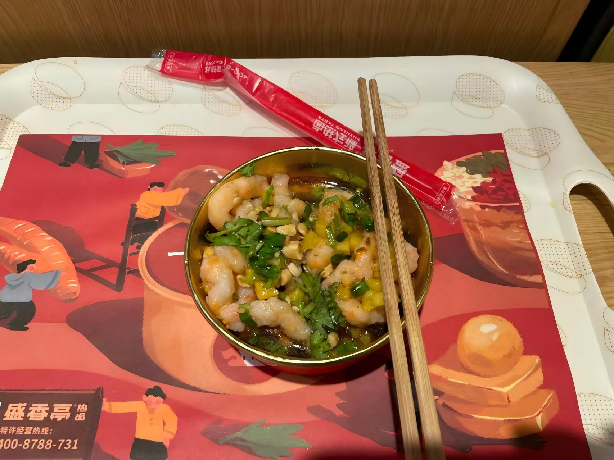
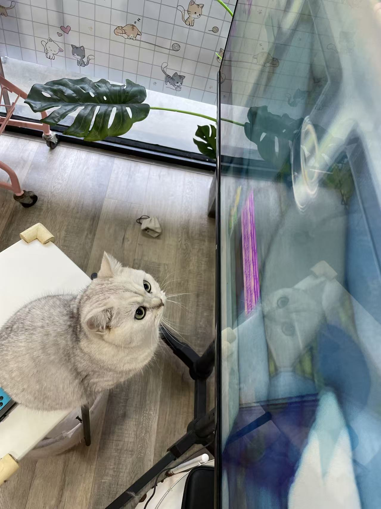
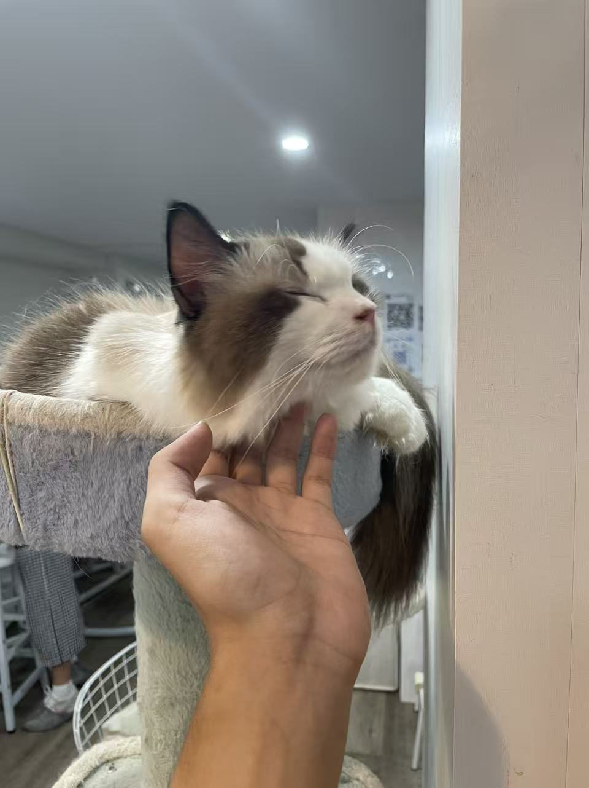

第一次约会 💕
一切美好的开始----戏剧又幸福的相恋剧情
2022年9月10日--2022年10月1日



第一次一起出门
2022.9.10 - 静安大悦城
那天你穿着紫色的可爱小裙子，打扮的像漂亮的小师妹。这是我们第一次单独出门，虽然还没有在一起但已经像约会一样了。记得你的笑容特别灿烂。你带我吃了很多以前没有吃过的美味，盛香亭的热卤虾滑，云海肴的金汤米线，每一口都值得回味良久。当然那一天最值得回味的还是秀色可餐的小宝宝。之后我们一起逛街，去楼顶看摩天轮，最后在电竞酒店结束了我们神奇的一天。还记得夜晚宝宝身穿内衣躺在我的怀里一起看综艺，接近天亮后疲惫的我趴在宝宝背上睡觉，这是独属于我们爱情故事的荒诞而又甜蜜的开始。
第一次正式约会
2022.9.30 - 静安大悦城
傍晚我们一起去江边散步，微风轻轻吹过，你有点害羞的样子特别可爱。


河畔漫步
2022.9.30 - 意大利餐厅
第一次一起吃饭，你点了意面，我点了牛排。



正式约会day2
2022.10.1 - 地铁站
送你到地铁站，依依不舍地告别，期待下次见面。
第一次约会的感受
那天的一切都那么完美。从见到你的第一眼起，我就知道我们会有一段特别的故事。 你的笑容让我心跳加速，和你聊天让我感到无比愉快。虽然有些紧张，但更多的是期待和兴奋。 谢谢你给了我这个美好的开始，让我们的故事有了这么温暖的开篇。